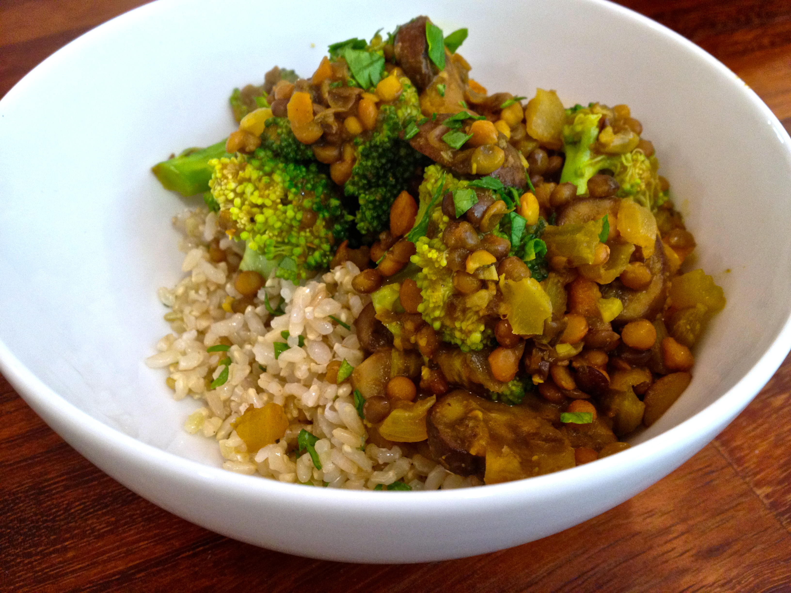

Kitchen Tips and Resources
Are you an aspiring cook for Davis House?
Or perhaps just looking for some information to help launch your cooking career in the coops?
Here are some useful documents to get you started!
Looking to Pick Up a Cook Shift?
It's important that you make healthy meals that everyone can enjoy.
To meet this criteria, a typical dinner should look something like this:
| Type of Food | Example Dishes/Ingredients |
|---|---|
| Vegan Protein | quinoa, tofu, beans, tempeh, lentils, etc |
| Starch | rice, potatoes, bread, pasta, etc |
| Vegetable | salad, oven roasted veggies, etc |
| Above and Beyond | more veggies, meat, dessert, beverages, etc |

Lentils: The Coop Classic
Be in the Know!
Keep up to date with the foods that are in season. It's handy to know for when you are planning a meal in advance, or if you are considering submitting a request to the Kitchen Manager. Here are some links to charts detailing the seasonality of common fruits and vegetables.
Fruits VegetablesKitchen Guidelines
- Clean up after yourself! Just because there's a kitchen clean shift, doesn't mean you shouldn't handle the mess you made making that vegan double shot espresso gluten-free stir-fry
- Always check to see if there's an open container of what you're looking for thoroughly before opening a new one. Odds are, there's one laying around somewhere
- Refrigerated items need to go back into the fridge! Don't be the person who makes us throw away a whole block of sweet, sweet white cheddar
- Always cook meat on the red cutting boards. Those are reserved specifically for cooking non-vegetarian foods
- If you are seeking a cook shift, you should know the allergies of your housemates and plan your dishes accordingly
Additional Resources
- Smitten Kitchen
- A great blog for finding recipes. The site offers the ability to search for recipes based on the main ingredient. So, if we have an abundance of zucchinis, for example, you could find a neat dish to make from them! Just click on the "recipes" tab and look through the massive list of ingredients for the one you want to work with. Experiment with this site to find something nice to make.
- CUESA
- The Center for Urban Education About Sustainable Agriculture (CUESA, mysteriously missing an 'A' for convenience). Despite their cheating acronym, this site is a good resource for learning about eating locally and seasonally. They also house a database of recipes and a search tool to accompany it. Go check it out!
- Coop Cookbook
- Created by former BSC member, this fancy online book is a primary source on how to be an awesome coop chef. It specializes in suggesting recipes tailored to serving lots of people, and using ingredients we probably have here in our humble home.
- Post Punk Kitchen
- Vegan? Check out this site for recipes for all of your herbivorous needs. This site features searching for recipes by their main ingredient, and contains lots of cool and creative ideas for an interesting dish.